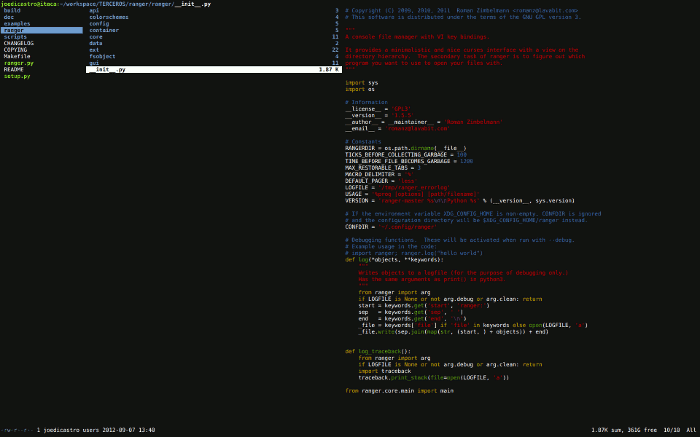

Algunos pensarán, de acuerdo, podemos entender que prefieras un gestor de ventanas de mosaico, o que emplees aplicaciones como Pentadactyl, Newsbeuter, Zathura o Turses, pero Ranger... ya es demasiado. ¿A quien en su sano juicio se le ocurriría utilizar semejante engendro? A mí, y no solo lo utilizo a diario, si no que además opino que es quizás la mejor aplicación que he descubierto en el último año y medio. Y esto último es mucho decir para alguien, que como yo, está continuamente buscando formas de mejorar su modo de trabajo.
Ranger es un administrador de archivos en modo texto. Pero no es un administrador de archivos en modo texto clásico a dos columnas, como el norton commander y similares. No, Ranger es una pequeña joya con un planteamiento distinto y tan potente, que puede conseguir que olvides que no podías vivir sin un gestor de archivos gráfico como Nautilus, Konqueror, Dolphin o Thunar.
Ranger
Tengo que estar enormemente agradecido a su autor, Roman Zimbelmann no solo por su trabajo, si no por mostrarme que incluso en modo texto, se puede revolucionar el mundo de la usabilidad. Evidentemente, en una aplicación que basa su control en el teclado (tiene un soporte muy básico del ratón), es requisito imprescindible invertir algún tiempo en aprender a utilizarlo, ya que no es tan intuitivo como una aplicación gráfica. A menos que seas un usuario típico de Vim, entonces te encontrarás como en casa. Una vez que dominas esta aplicación, el moverse entre los directorios y el realizar operaciones se hace a velocidad de vértigo y con control absoluto (siempre que no seas un manazas con el teclado).
Ranger está desarrollado en Python y emplea una interfaz ncurses igual que Turses. Al contrario de lo que algunos puedan pensar, el estar desarrollado en Python no lo convierte ni en pesado ni en lento, si no que se mueve a velocidad endiablada y consume una cantidad de memoria ridícula comparada con cualquier gestor de archivos gráfico.

Aquí puede verse una imagen típica de ranger, visualizando el contenido de un directorio y previsualizando el contenido de un fichero, en este caso un fichero de código python.
Características
¿Qué se puede hacer con ranger?, bueno, quizás es mejor preguntarse que no se puede hacer con Ranger. Prácticamente todas las funciones a las que estés acostumbrado en un administrador de archivos gráfico se pueden realizar con Ranger. Vamos primero a ver un resumen de sus características:
- Soporte de UTF-8 por defecto
- Visualización en múltiples columnas
- Previsualización del directorio o fichero seleccionado
- Operaciones comunes sobre los ficheros. Crear, copiar, borrar, cambiar
atributos (
chmod), etc... - Combinaciones de teclado y consola inspiradas en Vim
- Autodetección de tipos de fichero y apertura de los mismos con el programa adecuado
- Permite establecer etiquetas y marcadores sobre archivos y directorios
- Empleo de pestañas. Nos permite navegar por varios directorios simultáneamente sin necesidad de abrir otra instancia del programa. Además se pueden realizar operaciones entre ellas
- Muestra una barra de progreso para las operaciones que lo necesitan
Conviene dejar claro que no es un programa para impacientes, hacerse con él y sus innumerables opciones requiere tiempo. Hay que leerse la ayuda del programa y practicar con él. A su vez, si queremos personalizar las opciones o ampliarlo, debemos comprender como funcionan sus archivos de configuración, mejor aún si tenemos conocimientos de Python. La documentación de su web, así como la de sus páginas man está un poco desactualizada, por lo que sacarle todo su jugo requiere algo de paciencia.
Ejemplos
Voy a intentar dar algo de visibilidad a algunas de las capacidades que nos ofrece ranger empleando una par de ejemplos que lo ilustren.
En el siguiente ejemplo vemos la previsualización que hace ranger en función del tipo de fichero que se trate.
Previsualización de archivos en ranger con varios tipos de archivo. Recomiendo ver en alta resolución y a pantalla completa.
La previsualización de imágenes en ASCII puede parecer una tontería, pero resulta muy útil a la hora de diferenciar entre distintas imágenes con nombre muy parecido. El fichero en HTML está renderizado en vez de mostrarnos el texto plano, algo más amigable. También se agradece mucho el que los ficheros de código se vean con resaltado de sintaxis.
Conviene aclarar que para realizar esta previsualización es necesario tener instalado una serie de pequeñas aplicaciones que se detallan en el sitio de ranger como dependencias.
Aquí vemos como se abren automáticamente los programas adecuados en función del tipo de archivo (se puede configurar que aplicaciones emplear y cuales usar en cada momento)
Ejecución automática de aplicaciones en función del tipo de archivo. Recomiendo ver en alta resolución y a pantalla completa.
En el caso del fichero Torrent, al que no tengo asociada ninguna aplicación en ranger, me abre un comando en el que puedo especificar directamente la aplicación que deseo emplear para gestionarlo. En este caso, ninguna. En el archivo comprimido solo me muestra el contenido del mismo, podría asociarle alguna aplicación, pero ya tengo comandos para manejarlos dentro del propio ranger, algo que veremos a continuación.
Mi configuración
No he personalizado mucho mi configuración de momento, pero quien quiera echarle un vistazo puede hacerlo en mi repositorio dotfiles en GitHub
Archivos de configuración
Para configurar ranger necesitamos editar ciertos archivos, que crearemos por primera vez con el siguiente comando:
$ ranger --copy-config=all
qué nos creara los siguientes archivos por defecto en la carpeta
~/.config/ranger/:
commands.py(python), en este archivo se configuran los comandos a emplear en la línea de comandos de rangeroptions.py(python), el fichero de opciones principal de rangerrc.conf(texto), aquí configuramos los atajos de teclado de rangerrifle.conf(texto), para establecer los programas que ejecutaran o abrirán un tipo de archivo en orden de preferenciascope.sh(bash), los programas empleados para previsualizar un determinado tipo de archivo
Adicionalmente, con el uso se añadirán tres ficheros más: bookmarks, history
y tagged que guardarán los marcadores, la historia de comandos y las etiquetas
respectivamente.
Gestionar la papelera
Por defecto ranger no contempla la gestión de la papelera de Linux que
implementan escritorios como Gnome. Aunque no empleo ningún entorno
de escritorio ni gestores de archivos gráficos, si me interesa gestionar la
papelera, pues cada vez más aplicaciones la emplean para eliminar los archivos.
De hecho en bash y zsh tengo un alias para rm que mueve los archivos a la
papelera en vez de eliminarlos.
alias rm='mv --target-directory ~/.local/share/Trash/files'
Para gestionar la papelera desde ranger, añado dos atajos de teclado y un comando editando varios archivos de configuración de la siguiente manera:
Mandar archivos a la papelera
Para mandar a la papelera lo que tengamos seleccionado actualmente, en lugar de
eliminarlo directamente, añadimos esta línea al fichero rc.conf
# move to trash map DD shell mv -t ~/.local/share/Trash/files %s
de este modo, cada vez que pulsemos DD el contenido seleccionado es movido
al directorio donde tenemos nuestra papelera.
Movernos a la papelera
Del mismo modo que ranger provee por defecto de atajos de teclado para movernos
al directorio home, al directorio raiz, etc, he añadido un atajo de teclado
siguiendo el mismo criterio para acceder a nuestra papelera. Añadimos lo
siguiente al fichero rc.conf
# go to trash map gp cd ~/.local/share/Trash/files
así, pulsando gp vamos directamente a la papelera, estemos donde estemos.
Vaciar la papelera
Para vaciar la papelera opto por emplear un comando, para ello tenemos que
editar otro fichero, commands.py, y añadir lo siguiente
class empty(Command): """ :empty Empties the trash directory ~/.local/share/Trash/files """ def execute(self): self.fm.run("rm -rf ~/.local/share/Trash/files/{*,.[^.]*}")
por lo que vaciar la papelera se convierte en algo tan simple como teclear
:empty o para los más cómodos :em↹
Desmontar una unidad con udiskie
Dada mi "particular" configuración, ya que no empleo ningún escritorio, empleo
la herramienta udiskie para automontar unidades de almacenamiento
externas, como unidades USB o tarjetas de memoria. El montado se hace de forma
automática y solo el desmontado ha de hacerse de forma manual. Ya que no quiero
teclear el comando cada vez que desee desmontar una unidad, lo que hago es
hacerlo desde ranger. En el fichero rc.conf mapeamos este atajo
# umount a drive with udiskie map un shell -d udiskie-umount %d/%f
así para desmontar una unidad inicio ranger (en mi caso Win + F1), me
dirijo a las unidades externas montadas, gm, selecciono la unidad deseada
y la desmonto, un. Un proceso que me lleva apenas dos segundos, sin
abandonar las manos del teclado, compárese con hacerlo con un ratón y un entorno
gráfico.
Expulsar un CD/DVD
Del mismo modo, en lugar de abrir un terminal y escribir el comando eject, en
determinadas circunstancias, por ejemplo al acabar de examinar el contenido de
un disco, prefiero hacerlo directamente desde ranger. Para ello en el fichero
rc.conf creamos este atajo de teclado
# eject a CD-ROM/DVD map ej shell -d eject
Trabajar con archivos comprimidos
Estos comandos los he sacado de el Wiki de Arch Linux y los he adaptado a la versión de ranger que estoy empleando en este momento, la 1.5.5
Extraer los ficheros de un archivo comprimido
Con el comando :extracthere extraemos el contenido de un archivo/s
comprimido que previamente habremos seleccionado para copia (es decir empleando
el atajo yy). El contenido se extrae en el directorio en el que nos
encontremos actualmente. Es muy comodo para extraer múltiples archivos
comprimidos a la vez, si quisieramos descomprimir solo un archivo y en el mismo
directorio en el que este se encuentra, podríamos emplear el atajo 1l
Para añadir el comando a ranger, tenemos que insertar esta clase en el fichero
commands.py
class extracthere(Command): def execute(self): """ Extract copied files to current directory """ copied_files = tuple(self.fm.env.copy) if not copied_files: return def refresh(_): cwd = self.fm.env.get_directory(original_path) cwd.load_content() one_file = copied_files[0] cwd = self.fm.thisdir original_path = cwd.path au_flags = ['-X', cwd.path] au_flags += self.line.split()[1:] au_flags += ['-e'] self.fm.env.copy.clear() self.fm.env.cut = False if len(copied_files) == 1: descr = "extracting: " + os.path.basename(one_file.path) else: descr = "extracting files from: " + os.path.basename(one_file.dirname) obj = CommandLoader(args=['aunpack'] + au_flags \ + [f.path for f in copied_files], descr=descr) obj.signal_bind('after', refresh) self.fm.loader.add(obj)
Crear un archivo comprimido
Este comando te permite seleccionar uno o varios ficheros y crear un archivo
comprimido al llamar al comando :compress. Este comando te permite (a
través del autocompletado) darle un nombre automático a partir del directorio o
uno personalizado. Te permite además seleccionar el tipo de compresión en
función de la extension empleada.
En el fichero commands.py añadimos el siguiente código.
class compress(Command): def execute(self): """ Compress marked files to current directory """ cwd = self.fm.thisdir marked_files = cwd.get_selection() if not marked_files: return def refresh(_): cwd = self.fm.env.get_directory(original_path) cwd.load_content() original_path = cwd.path parts = self.line.split() au_flags = parts[1:] descr = "compressing files in: " + os.path.basename(parts[1]) obj = CommandLoader(args=['apack'] + au_flags + \ [os.path.relpath(f.path, cwd.path) for f in marked_files], descr=descr) obj.signal_bind('after', refresh) self.fm.loader.add(obj) def tab(self): """ Complete with current folder name """ extension = ['.zip', '.tar.gz', '.rar', '.7z'] return ['compress ' + os.path.basename(self.fm.thisdir.path) + ext for ext in extension]
Comentarios !